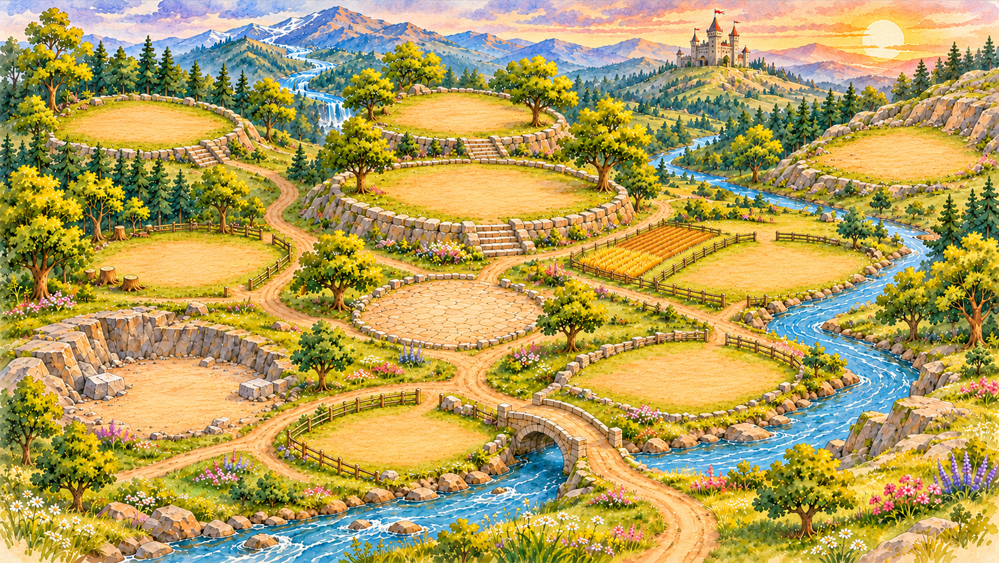

The Realm · Ten-building village
Final restrained art-polish review. Ten separate mature illustrations on the approved clean terrain. This scene is independent of game state.
On mobile, pan horizontally. Use the selector to bring any of the ten sites into view.

Ten buildings shown. Polished sprites on unchanged approved terrain and geometry.